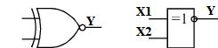

2.3.2. Элемент "Исключающее ИЛИ-НЕ"
Элемент Исключающее ИЛИ – НЕ (рис.18.2) в англоязычной транскрипции называется XNOR (eXclusive-NOR)..

Рис. 18.2. Обозначения элементов "Исключающее ИЛИ - НЕ" (зарубежные – слева, отечественные – справа)
Рис. 18.2. Обозначения элементов "Исключающее ИЛИ - НЕ" (зарубежные – слева, отечественные – справа)
Таблица истинности элемента "Исключающее ИЛИ - НЕ" (табл. 18.2).
Таблица 18.2
| Входы | Выход | |
| X1 | X2 | Y |
| 0 | 0 | 1 |
| 0 | 1 | 0 |
| 1 | 0 | 0 |
| 1 | 1 | 1 |
2